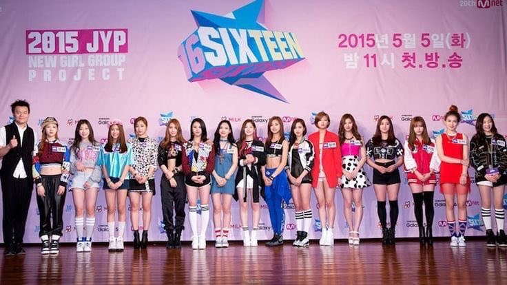
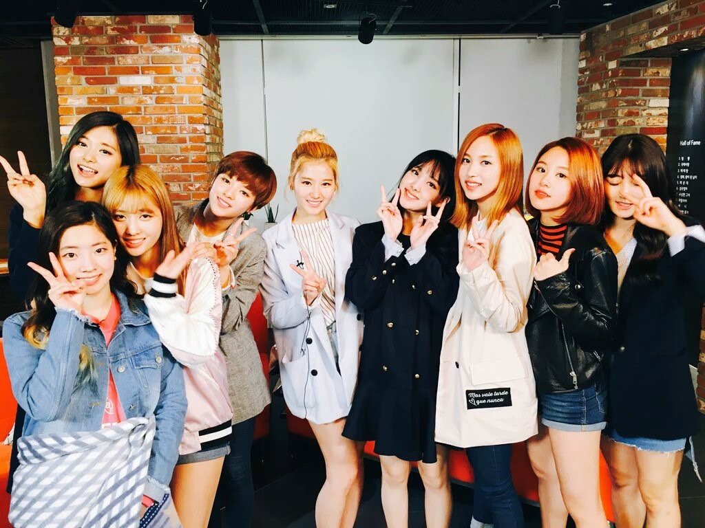

《SIXTEEN》（韓語：식스틴）是JYP娛樂在2015年與Mnet合作開播的新女子音樂團體選拔及生存實境節目，以七名預備成員及九名練習生作為主角，進行各種唱歌、舞蹈等嚴格訓練並競爭，最後獲選的成員會成為JYP娛樂新女團「TWICE」的成員出道。
《TWICE優雅的私生活》（韓語：트와이스의 우아한 사생활）是以韓國JYP娛樂公司旗下的女子團體TWICE為主角所拍攝的真人實境秀綜藝節目。將團員們的真實日常生活毫不保留地完整公開。
TWICE從2020年在官方youtube頻道不定時更新的團體綜藝，目前共有24季。以下會放出其中令人印象深刻的幾季